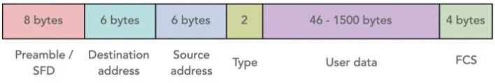
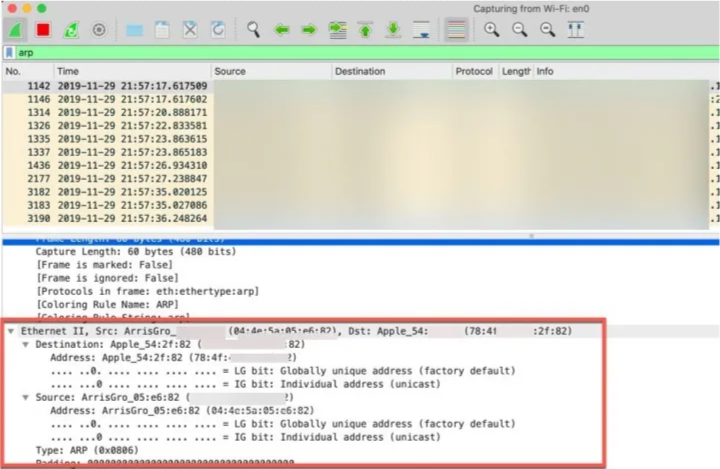

◉ Histórico e introdução
Ethernet é uma família de tecnologias de rede de computadores com fio comumente usadas em
redes de área local (LAN), redes de área metropolitana (MAN) e redes de longa distância
(WAN).[1] Foi introduzido comercialmente em 1980 e padronizado pela primeira vez em 1983
como IEEE 802.3. A Ethernet desde então foi refinada para suportar taxas de bits mais altas,
um número maior de nós e distâncias de link mais longas, mas mantém muita compatibilidade
com versões anteriores. Com o tempo a Ethernet substituiu amplamente as tecnologias de LAN
com fio concorrentes, como Token ring, FDDI e Arcnet.
A Ethernet 10BASE5 original usa cabo coaxial como meio compartilhado, enquanto as variantes
mais recentes da Ethernet usam par trançado e links de fibra óptica em conjunto com switches. Ao longo de sua história, as taxas de transferência de dados Ethernet foram aumentadas em relação ao original 2,94 Mbit/s[2] para o mais recente 400 Gbit/s, com taxas de até 1,6 Tbit/s em desenvolvimento. Os padrões Ethernet incluem várias variantes de fiação e sinalização da camada física OSI.
Os sistemas que se comunicam por Ethernet dividem um fluxo de dados em partes mais curtas
chamadas quadros. Cada quadro contém endereços de origem e destino e dados de verificação
de erros para que os quadros danificados possam ser detectados e descartados; na maioria das
vezes, os protocolos de camada superior acionam a retransmissão de quadros perdidos.
De acordo com o modelo OSI, a Ethernet fornece serviços até e incluindo a camada de enlace
de dados.[3] O endereço MAC de 48 bits foi adotado por outros padrões de rede IEEE 802,
incluindo IEEE 802.11 (Wi-Fi), bem como pelo FDDI. Os valores EtherType também são usados
nos cabeçalhos do Subnetwork Access Protocol (SNAP).
A Ethernet é amplamente usada em residências e na indústria e funciona bem com tecnologias
Wi-Fi. O Internet Protocol é comumente transportado pela Ethernet e por isso é considerado
um dos principais protocolos que compõem a Internet.
◉ Frames ethernet
Ethernet (também conhecida como norma IEEE 802.3) é uma arquitetura usada em redes LAN
(Local Area Network). Esta arquitetura foi originalmente concebida para que várias
máquinas possam comunicar num mesmo meio de comunicação.
Mas quais são os campos que fazem parte de uma frame Ethernet? Hoje explicamos a
especificação 802.3 que é usada para aceder a uma rede Ethernet.
Quando duas máquinas precisam de comunicar numa rede LAN, usam como PDU
(na camada 2 do modelo OSI) frames. Uma frame não é nada mais que uma mensagem estruturada
onde constam alguns campos. Esta “mensagem” tem campos que para o endereço físico da
máquina de origem, o endereço físico da máquina de destino, os dados a serem transmitidos
e código de deteção de erros.
➤ Formato de uma Frame Ethernet

• Preâmbulo: Sequência de 7 bytes para sincronização entre o emissor e recetor (7 bytes)
• SFD (Start Frame Delimitir) — Identifica o início da frame (1 byte)
• Endereço de destino — Endereço físico (endereço MAC) do dispositivo de destino. O endereço pode ser unicast, multicast ou broadcast (FFFF.FFFF.FFFF) (6 bytes)
• Endereço de origem — Endereço físico (endereço MAC) do dispositivo de origem. O endereço pode ser unicast, multicast ou broadcast (FFFF.FFFF.FFFF) (6 bytes)
• Tipo: Tipo de Frame (2 Bytes)
• Dados: O tamanho dos dados pode variar entre 64 bytes e 1518 bytes (excluindo o Preâmbulo e o SFD). Se for maior ou menor que esse intervalo a frame é descartada pelo recetor.
• FCS: Código de deteção de redes (4 bytes)
➤ Como ver uma frame Ethernet usando o Wireshark?
Wireshark é uma ferramenta de análise protocolar, que permite a captação, em tempo real, de
PDUs, e apresenta essa informação num formato legível para os utilizadores.
O processo de captura de tráfego é realizado via placa de rede. Para ver uma frame Ethernet
pode, pode exemplo, fazer um ping para o servidor de DNS da Google (8.8.8.8) e captar o tráfego.
Como filtro podem usar o parâmetro arp ou icmp.

◉ O Protocolo de Função de Endereço Reverso (ARP)
O (ARP) é uma tecnologia importante para o funcionamento
das redes de computadores. Ele permite que os dispositivos conectados em uma rede local se
comuniquem entre si, identificando e localizando uns aos outros.
Para entender como o ARP funciona, é preciso ter em mente que cada dispositivo conectado a uma
rede possui um endereço IP, que é uma espécie de identificação única na rede. O endereço IP é
composto por uma sequência de números, separados por pontos, como por exemplo: 192.168.0.1.
Quando um dispositivo precisa enviar dados para outro na mesma rede, ele utiliza o endereço IP
de destino para saber para onde enviar esses dados. Porém, o ARP é responsável por encontrar
o endereço físico do dispositivo de destino, conhecido como endereço MAC.
O endereço MAC é um código único atribuído a cada placa de rede de um dispositivo. Ele é
composto por uma sequência de números e letras, separados por dois pontos, como por exemplo:
00:1A:2B:3C:4D:5E. É através do endereço MAC que os dispositivos se reconhecem e se comunicam na
rede local.
Quando um dispositivo precisa enviar dados para outro, ele envia uma mensagem ARP para a rede,
perguntando "Quem possui o endereço IP X?". Todos os dispositivos da rede recebem essa mensagem,
mas apenas o dispositivo com o endereço IP X responde, fornecendo o seu endereço MAC.
Após receber a resposta, o dispositivo remetente pode então enviar os dados para o dispositivo
de destino, utilizando o endereço MAC fornecido. Essa comunicação entre dispositivos através do
ARP é essencial para o funcionamento correto da rede, garantindo que os dados sejam entregues
aos destinatários corretos.
Basicamente, o Protocolo de Função de Endereço Reverso (ARP) é responsável por encontrar o
endereço físico de um dispositivo na rede local, a partir do seu endereço IP. Essa tecnologia
permite que os dispositivos se comuniquem entre si, garantindo o correto envio e recebimento de
dados na rede.
◉ O Protocolo de Resolução Reversa de Endereços (RARP)
O Protocolo (RARP) é uma tecnologia que permite que um
dispositivo de rede obtenha seu endereço IP a partir de seu endereço físico (MAC).
Imagine que você tem um computador em uma rede e precisa se conectar a outros dispositivos.
Para isso, é necessário que cada dispositivo tenha um endereço IP exclusivo. No entanto, o
computador não sabe qual endereço IP utilizar. É aí que o RARP entra em ação.
O RARP funciona de forma inversa ao Protocolo de Resolução de Endereços (ARP). Enquanto o ARP
mapeia um endereço IP para um endereço MAC, o RARP mapeia um endereço MAC para um endereço IP.
Quando um dispositivo é inicializado em uma rede, ele envia uma mensagem RARP para um servidor
RARP. Essa mensagem contém o endereço MAC do dispositivo e solicita um endereço IP
correspondente. O servidor RARP recebe a mensagem, verifica o endereço MAC e retorna o
endereço IP correspondente.
Dessa forma, o dispositivo recebe seu endereço IP e pode se comunicar com outros dispositivos
na rede. O RARP é especialmente útil em redes com muitos dispositivos, pois simplifica o
processo de atribuição de endereços IP, evitando a necessidade de configurar manualmente cada
dispositivo.
Embora o RARP tenha sido amplamente utilizado no passado, atualmente ele foi substituído pelo
Dynamic Host Configuration Protocol (DHCP), que é mais flexível e oferece recursos adicionais,
como a configuração automática de outros parâmetros de rede.
Basicamente, o Protocolo de Resolução Reversa de Endereços (RARP) é uma tecnologia que permite
que um dispositivo de rede obtenha seu endereço IP a partir de seu endereço físico.
Ele simplifica o processo de atribuição de endereços IP em uma rede, mas foi substituído pelo
DHCP devido às suas limitações.